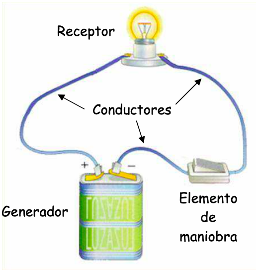
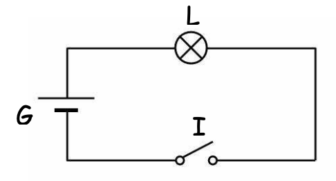
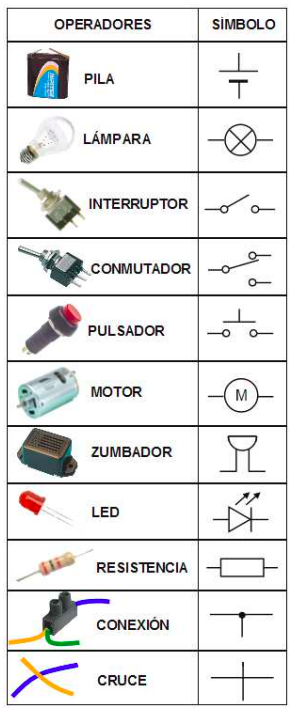
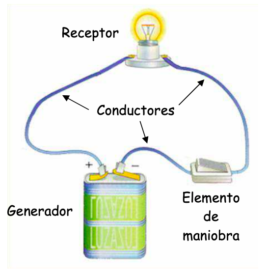
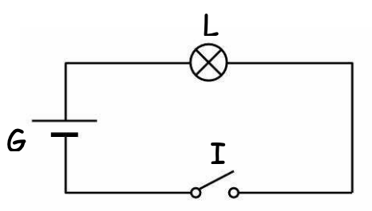
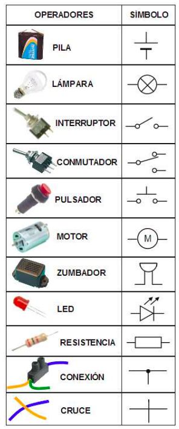

1. Introducción
La corriente eléctrica es el movimiento de electrones, que son portadores de carga eléctrica. Un circuito eléctrico es un conjunto de dispositivos conectados entre sí a través de materiales conductores (como los cables de cobre). Para que los electrones se muevan a través de un circuito es necesario que haya un dispositivo denominado generador (como las pilas). Los generadores aportan energía a los electrones. Los generadores se caracterizan por su voltaje. La energía de los electrones se utiliza en otros dispositivos denominados receptores (como las lámparas, los motores, etc.). Para poder controlar la corriente eléctrica, en los circuitos existen elementos de maniobra (como los interruptores, los pulsadores, etc.).

Para representar los circuitos eléctricos utilizamos esquemas eléctricos con símbolos.


Lectura facilitada
La corriente eléctrica es cuando los electrones se mueven. Los electrones tienen carga eléctrica. Un circuito eléctrico es un grupo de cosas que están conectadas por cables conductores, como el cobre. Para que los electrones se muevan en el circuito, se necesita un generador, como las pilas. Los generadores les dan energía a los electrones. Los generadores tienen un voltaje específico. La energía de los electrones se usa en cosas como las lámparas y los motores. Para controlar la corriente eléctrica, hay interruptores y pulsadores en los circuitos.

Para representar los circuitos eléctricos utilizamos esquemas eléctricos con símbolos.

